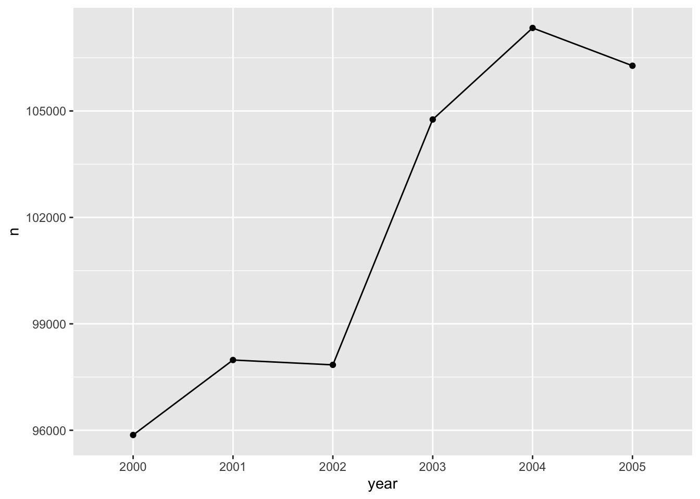
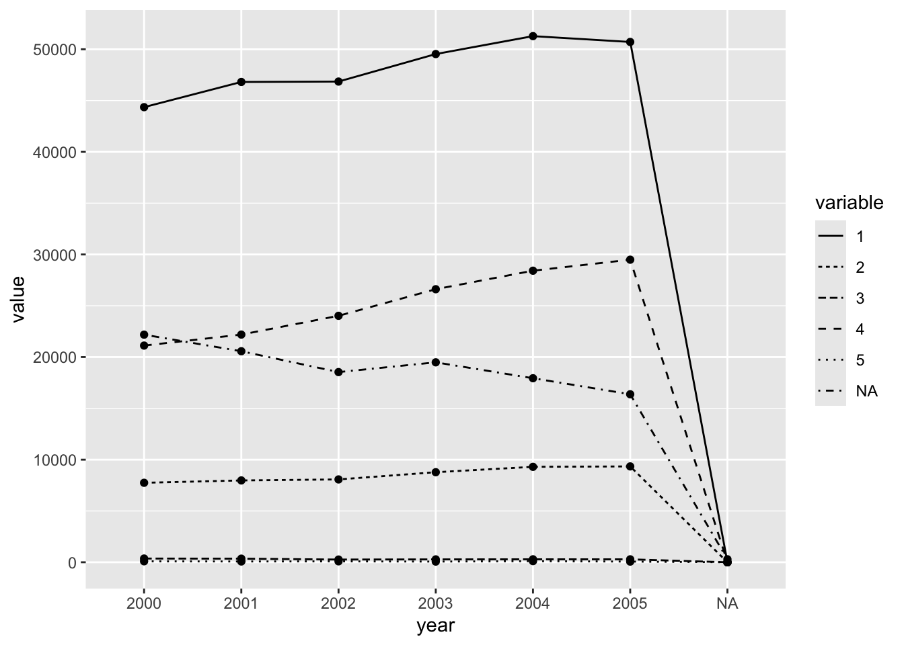
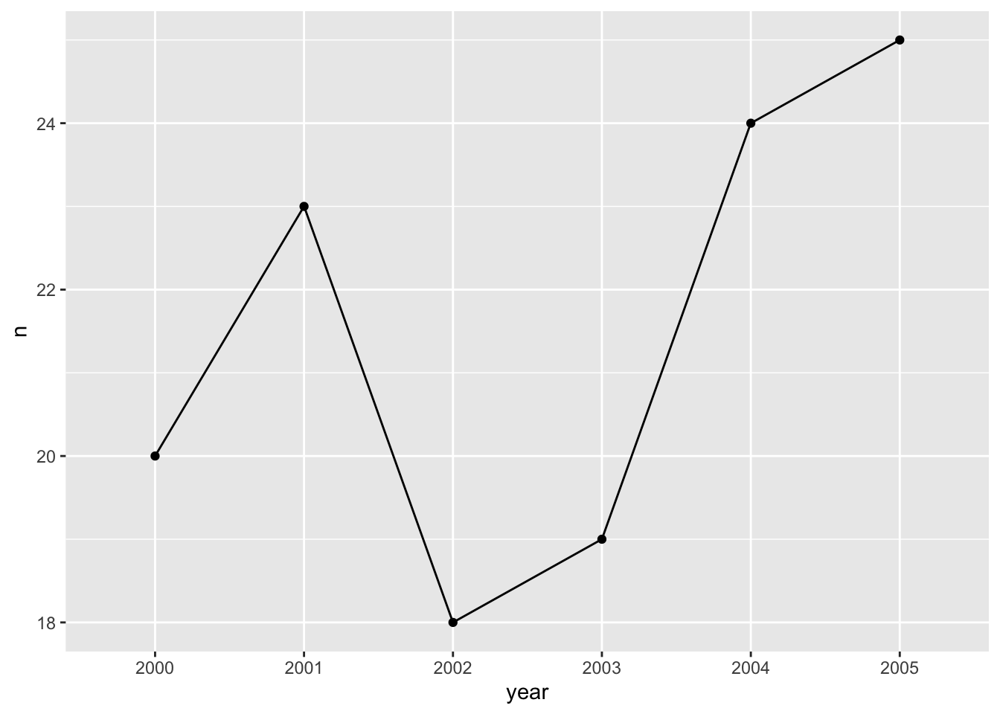

Accessing the Raça/Cor Variable in DATASUS
Gepoliano Chaves
June 5th, 2024
Para verificação da variável raça/cor foi utilizado o vídeo do Fábio Rocha (2023) como referência.
Load libraries
library(microdatasus)
library(dplyr)
library(tidyverse)
library(maditr)
Coleta e Processamento de dados
dados = fetch_datasus(year_start = 2000,
year_end = 2005,
uf = "MG",
information_system = "SIM-DO")Salvando dados. Sempre salvar dados baixados de fonte externa como .rds, pois salvará tempo.
saveRDS(dados, file = "data/dados.rds")
Carregando dados processados e calculando tempo para carregar
start_time <- Sys.time()
dados <- readRDS("data/dados.rds")
end_time <- Sys.time()
end_time - start_time## Time difference of 0.526439 secs
Contagem de indivíduos por categoria da Variável Raça/Cor
library(expss)
cross_cases(dados, RACACOR)| #Total | |
|---|---|
| RACACOR | |
| 1 | 289548 |
| 2 | 51222 |
| 3 | 1840 |
| 4 | 151858 |
| 5 | 512 |
| #Total cases | 494980 |
Constrir DF com identificação racial
numero total de brancos, pardos, pretos, amarelos, indígenas
racacor_df <- dados %>% count(RACACOR, sort = TRUE)Transformar variável Raça/Cor
Transforma coluna com caracteres em nomes de raça/cor
racacor_df <- racacor_df %>%
dplyr::mutate(raca_cor_factor = ifelse(racacor_df$RACACOR == "1", "branca",
ifelse(racacor_df$RACACOR == "2", "preta",
ifelse(racacor_df$RACACOR == "3", "amarela",
ifelse(racacor_df$RACACOR == "4", "parda",
ifelse(racacor_df$RACACOR == "5", "indígena",
ifelse(racacor_df$RACACOR == "9", "ignorado","0")))))))
Gráfico de barras por categoria da Variável Raça/Cor
Nesta parte, poderemos estimar o número de indivíduos sob risco, considerando as categorias raciais brasileiras.
library(ggplot2)
# Basic barplot
ggplot(data=racacor_df, aes(x=raca_cor_factor, y=n)) +
geom_bar(stat="identity")
Gráficos de Mortalidade Anual
Selecionar variáveis e processá-las para obter ano de óbito do paciente
Transforma variável DTOBITO usando função dmy criando variável (coluna) YMD em yyyy-mm-dd. Referência: https://rstudio.github.io/cheatsheets/html/lubridate.html
library(lubridate)
dados_selected <- dados %>%
select(contador, RACACOR, DTOBITO, CAUSABAS, DTNASC, IDADE) %>%
mutate(YMD = dmy(dados$DTOBITO))## Warning: There was 1 warning in `mutate()`.
## ℹ In argument: `YMD = dmy(dados$DTOBITO)`.
## Caused by warning:
## ! 294 failed to parse.library(stringr)
# Split Each Sample
dados_year <- str_split_fixed(dados_selected$YMD, "-", 3)
# Construct Vector Maintaining parts of interest
split_vector_year <- paste0(dados_year[,1])
# Add vector to DF, after column of interest
dados_appended <- add_column(dados_selected, year = split_vector_year, .after = "YMD")
Agrupar dados pela variável years a fim de contar o número anual de indivíduos
Referência: https://dplyr.tidyverse.org/reference/group_by.html
Cálculos com valores anuais totais:
dados_agregados_year <- dados_appended %>%
group_by(year) %>%
summarise(n = n())dados_agrupados_racaCor <- dados_appended %>%
group_by(RACACOR) %>%
summarise(n = n())
dados_agregados_racaCor <- dados_appended %>%
group_by(year) %>%
group_by(RACACOR) %>%
summarise(n = n())
dados_agregados_racaCor <- dados_appended %>%
group_by(chr) %>%
summarise(avg = mean(x)) %>%
arrange(chr, .locale = "en")Remover NAs dos dados agregados por ano
dados_agregados_year <- dados_agregados_year[ which(
dados_agregados_year$year != "NA"), ]
Mortalidade Anual Total
library(ggplot2)
# Basic line plot with points
ggplot(data=dados_agregados_year, aes(x=year, y=n, group=1)) +
geom_line()+
geom_point()
Mortalidade Anual Total Usando Variável Raça/Cor
Mortalidade anual total (figura acima) e mortalidade anual usando a variável Raça/Cor (figura abaixo) foram feitas usando STHDA (2024) como referência.
dados_race_year_selcd <- dados_appended %>%
select(RACACOR, year)
dados_agrupados_racaCor <- dados_race_year_selcd %>%
group_by(RACACOR) %>%
summarise(n = n())library(reshape2)
#use cast() to convert data frame from long to wide format
wide_dados_appended <- dcast(dados_race_year_selcd, year ~ RACACOR)## Warning: The dcast generic in data.table has been passed a data.frame and will
## attempt to redirect to the relevant reshape2 method; please note that reshape2
## is superseded and is no longer actively developed, and this redirection is now
## deprecated. Please do this redirection yourself like
## reshape2::dcast(dados_race_year_selcd). In the next version, this warning will
## become an error.## Using 'year' as value column. Use 'value.var' to override## Aggregation function missing: defaulting to length# wide_dados_appended <- dcast(dados_race_year_selcd, RACACOR ~ year)
# Melt the data frame
dados_appended_melted <- melt(wide_dados_appended, id.vars = "year")## Warning: The melt generic in data.table has been passed a data.frame and will
## attempt to redirect to the relevant reshape2 method; please note that reshape2
## is superseded and is no longer actively developed, and this redirection is now
## deprecated. To continue using melt methods from reshape2 while both libraries
## are attached, e.g. melt.list, you can prepend the namespace, i.e.
## reshape2::melt(wide_dados_appended). In the next version, this warning will
## become an error.ggplot(dados_appended_melted, aes(x=year, y=value, group=variable)) +
geom_line(aes(linetype=variable))+
geom_point()
# wait to change the variable names:
# names(dados_appended_melted)[names(dados_appended_melted) == 'variable'] <- 'RACACOR'
# names(dados_appended_melted)[names(dados_appended_melted) == 'value'] <- 'n'
Mortalidade Anual Total por Neuroblastoma
dados_nb <- dados_appended[ which(
dados_appended$CAUSABAS == "C749"), ]
dados_agregados_nb_year <- dados_nb %>%
group_by(year) %>%
summarise(n = n())
ggplot(data=dados_agregados_nb_year, aes(x=year, y=n, group=1)) +
geom_line()+
geom_point()